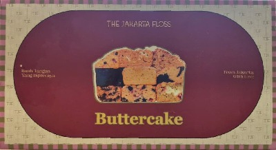

Gallery
Arahkan kamera ke
Cover Packaging Gift Station

Buttercake
✦ MARKER DETECTED ✦
made with ❤️ by
Moven Lab
✦ AR EXPERIENCE ✦
⚡
INITIALIZING CAMERA & 3D ENGINE
Starting AR Video
Preparing camera stream & 3D recognition...
"Arahkan kamera ke Cover Packaging Gift Station"
The Jakarta Floss
Made with ❤️ by Moven Lab
🎛️
AR Object Coordinates
✕
Target Marker
All Targets (0-5)
Target 0 - Buttercake
Target 1 - Bolen Lilit
Target 2 - Abon Gulung
Target 3 - Soft Cake Floss
Target 4 - Abon Gulung Mini
Target 5 - Sosis Gochujang
Position (X, Y, Z)
X:
0.00
Y:
0.39
Z:
0.500
Rotation (X, Y, Z) °
RotX:
35
°
RotY:
-1
°
RotZ:
-1
°
Scale Multiplier
Scale:
0.60
x
↺ Reset
📋 Copy Config
Config copied to clipboard!